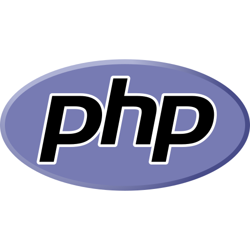
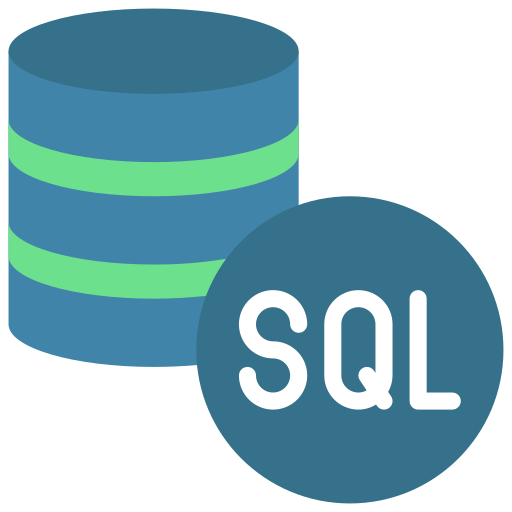
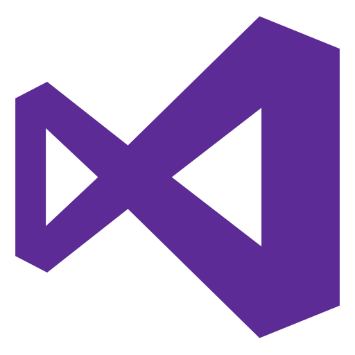
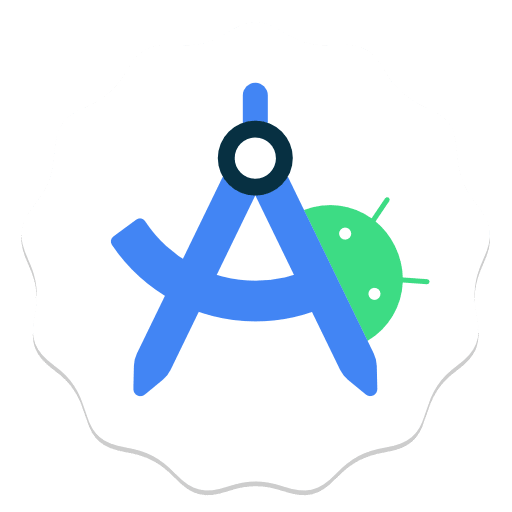
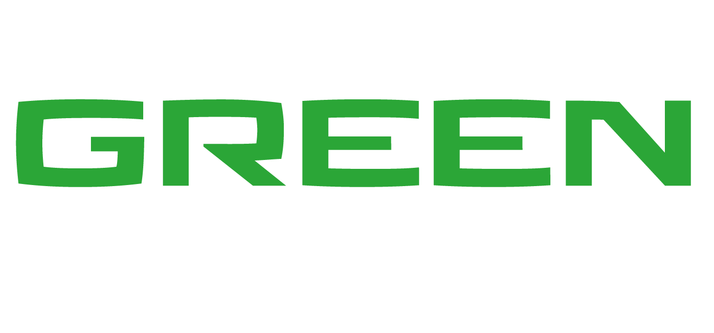

Disponible pour une alternance ou un stage — CDA EPSI Bordeaux (Aquitaine / Bordeaux / Pays Basque)
Bienvenue — Kilian Carasco
Portfolio · Développement Web & Software
Kilian CarascoDéveloppeur Web & Software.
Étudiant en Bachelor Concepteur Développeur d'Applications à l'EPSI Bordeaux, je cherche une alternance ou un stage pour continuer à progresser en construisant des applications utiles et bien structurées.
Curieux de nature, j'ai toujours regardé les jeux vidéo, les sites web et les logiciels avec une seule idée en tête : comprendre ce qui se cache derrière l'écran et apprendre à le construire moi-même.
Mes premières lignes de code au collège ont rapidement transformé cette curiosité en une véritable passion. Mon parcours s'est ensuite naturellement structuré : le bac STI2D m'a transmis une rigueur d'esprit et une méthode de réflexion d'ingénieur, tandis que le BTS SIO option SLAM est venu ancrer ces bases dans le concret. Les projets pratiques et mes immersions en entreprise ont définitivement confirmé mon envie d'en faire mon métier.
Ce qui me motive au quotidien dans le développement, c'est cette dynamique d'apprentissage permanent. C'est un terrain de jeu qui évolue sans cesse, où il faut faire de la veille, tester de nouvelles technologies et relever des défis techniques. Aujourd'hui axé sur le développement Full Stack, je continue de développer mes compétences avec l'ambition d'évoluer, à terme, vers l'ingénierie logicielle et la création interactive.
02 · Parcours
Jan. 2026Stage BTS SIO 2e année
Maison de l'Europe des Landes · Wipsee
Développement d'une application web de gestion de données et de modules de suivi. Cette expérience m'a permis de travailler sur des formulaires, la structuration de données et une solution pensée pour un besoin métier réel.
PHPSQLHTML / CSSJavaScript
Mai — Juin 2025Stage BTS SIO 1re année
Green Informatique · Capbreton
Développement d'un site web dynamique vitrine pour présenter le showroom de l'entreprise. J'y ai consolidé mes bases front-end et appris à adapter une réalisation technique à une demande concrète.
HTMLCSSJavaScript
Jan. 2020Stage de 3e
Dassault Aviation · Anglet
Découverte de l'environnement professionnel, des métiers de l'aéronautique et du travail en équipe.
Découverte métierTravail en équipe
03 · Compétences
Développement

PHP / MVC
Java
Python
HTML
CSS
JavaScript / Git
Données & back-end

SQL
MySQL
SQLite
API REST
CRUD
Merise
Outils utilisés

VS Code
NetBeans
VirtualBox

Android Studio
GitHub

Suite bureautique
Je garde une place importante pour la veille : chaque projet est l'occasion de comprendre une nouvelle technologie ou une nouvelle façon de résoudre un problème.